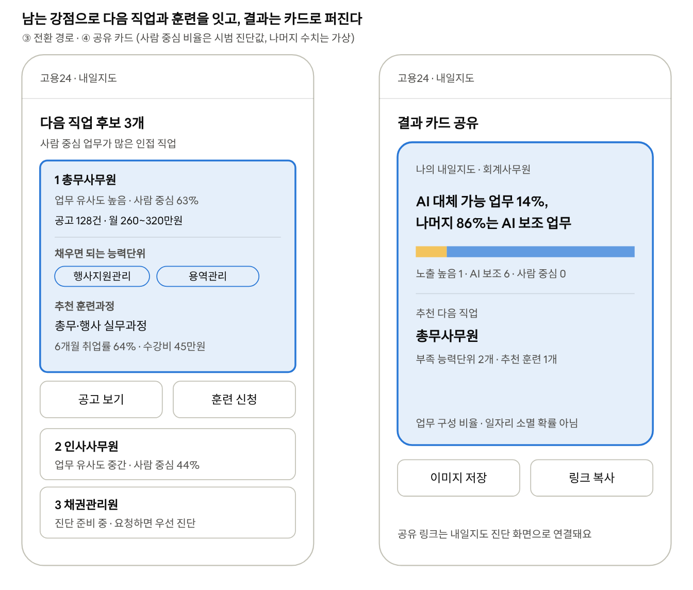

01 · 배경
AI는 직업 전체보다, 직업 안의 일부 업무를 바꿉니다
한국은행은 AI 대체 가능성이 높은 취업자를 약 341만 명(전체의 12%)으로 추정했습니다. 그런데 한국노동연구원·OECD 공동 세미나 발제(2025.12)에서는 AI가 직무 전체를 대체하는 비중은 8.4%였지만, 일부 과업을 대체하는 비중은 56.6%였습니다.
같은 직업 안에서도 바뀌는 업무와 남는 업무가 있고, 재직자의 훈련 수요는 이미 있습니다. 하지만 자기 업무에서 출발해 무엇을 배울지 고르게 돕는 진단은 고용24에서 찾기 어려웠습니다.
02 · 문제 정의
진단은 통계 표에 머물고, 고용24 이용으로 이어지지 않는다
- 업무 단위 진단이 없다. 잡케어는 NCS 능력단위로 보유·부족 역량을 보여 주지만 업무별 AI 노출은 다루지 않습니다.
- 개인이 쓸 수 없다. 연구기관의 노출 지수는 통계 표로만 나와 있어, 내 일에 바로 적용하기 어렵습니다.
- 다음 행동이 끊긴다. 불안을 확인해도, 그 자리에서 공고나 훈련으로 넘어갈 길이 없습니다.
03 · 해결 방안
직업 한 줄 → 업무별 진단 → 다음 직업 → 공고·훈련
노출도는 이용할 때 즉석에서 만들지 않고, 미리 평가·검수해 저장해 둡니다. 그래서 같은 직업에는 늘 같은 판정과 근거가 나옵니다. 코드 연결은 공식 연계표(직업사전 → KECO → NCS)를 먼저 쓰고, LLM은 연계표가 닿지 않는 선별·매칭과 해설에만 씁니다.
화면 맨 위의 'AI 대체 가능 업무 비율'은 노출 높음 업무 수 ÷ 전체 업무 수입니다. 일자리가 사라질 확률이 아니라 내 업무의 구성 비율이라는 점을 화면에도 적어, 불안을 키우지 않도록 했습니다.

04 · 검증
LLM 판정을 믿기 전에, 판정끼리 얼마나 일치하는지부터 쟀습니다
관점이 다른 판정자 3개(업무 수행자 관점, 도구 관점, 등급 정의 대조)를 서로 독립적으로 돌려 사무·상담 직업 4개, 실무 능력단위 31개를 시범 진단했습니다.
| 직업 | 능력단위 | AI 대체 가능 | AI 보조 | 사람 중심 | 3명 일치 |
|---|---|---|---|---|---|
| 회계사무원 | 7 | 14% | 86% | 0% | 6/7 |
| 인사사무원 | 9 | 0% | 56% | 44% | 4/9 |
| 고객상담원 | 7 | 14% | 71% | 0%* | 3/7 |
| 총무사무원 | 8 | 13% | 25% | 63% | 5/8 |
* 1개 검수 대기 · 사람 검수 전 결과
셋이 같으면 확정하고, 2:1로 갈리거나 셋 다 다르면 사람이 검수하는 규칙을 세웠습니다. 본 개발에서는 20개 직업(약 200개 업무)을 사람 검수자 3명이 따로 판정해, 사람 간·사람-모델 일치도를 가중 카파로 공개할 계획입니다.
05 · 운영 설계
틀릴 수 있다는 걸 전제로, 고쳐지는 구조를 만들었습니다
- 이의 버튼을 업무마다 두고, 이의가 쌓인 업무는 다시 검수합니다.
- 입력 문장은 저장하지 않고 이의·클릭만 익명으로 집계합니다.
- 진단되지 않은 직업은 가장 가까운 직업과 '진단 준비 중'을 보여 주고, 요청 수를 다음 진단 순서에 반영합니다.
- 직업사전 수행직무는 바꾸거나 요약하지 않고 '근거 보기'에서 원문만 인용합니다(공공누리 제4유형).
06 · 회고
"AI가 판단한다"보다 "AI 판단을 어떻게 믿게 할까"가 기획의 중심이었습니다
Fleiss 카파 0.43은 판정자끼리도 의견이 자주 갈린다는 뜻입니다. 이 숫자를 숨기지 않고 사람 검수 비율과 이의 제기 구조로 연결한 것이 이 기획의 핵심이었습니다. 다음 단계는 사람 평가로 판정 기준을 보정하고, 직업 매칭 정확도를 테스트셋 100건으로 확인하는 것입니다.